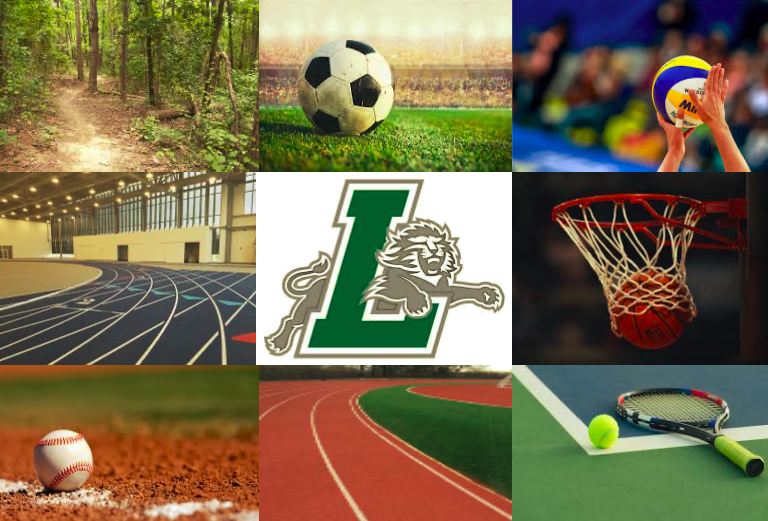
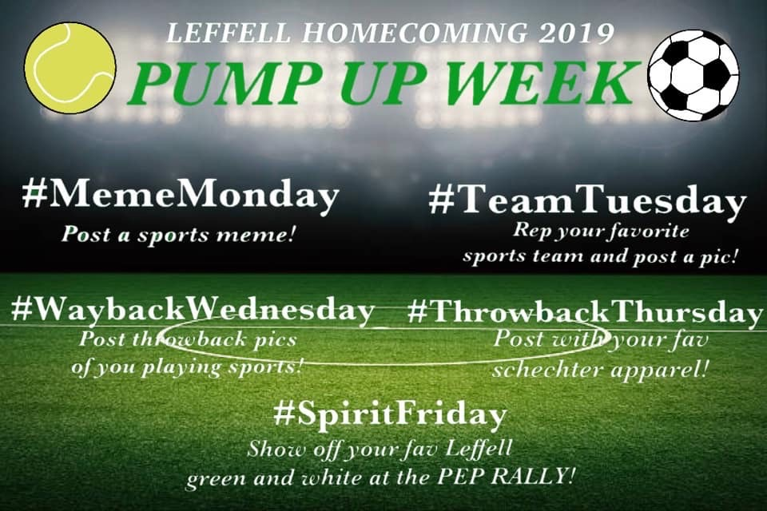
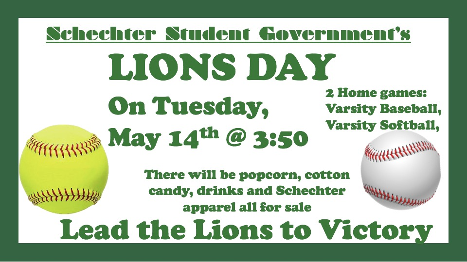

We are a group of 12 Leffell High School Students who have volunteered time to organize events pertaining to Leffell Athletics. Our goal is to better the school through athletics; drumming up hype for the seasons with events such as Pep-Rally, Homecoming, and Lion's Day.
|  | What Do We Do?Plan a pump up week leading up to pep-rally folllowed by homecoming |
Distrubute food and drinks during multiple sports games, prompting many people to attendWe hope to be able to have many more of these in the future |
 |
Ryan Altman
Andrew Bosworth
Ben Jacobson
Alex Jaeger
Jordan Lefkowitz
Joreh Mehl
Tzvi Miller
Aleeza Raich
Gabe Spielberg
Danielle Yuabov